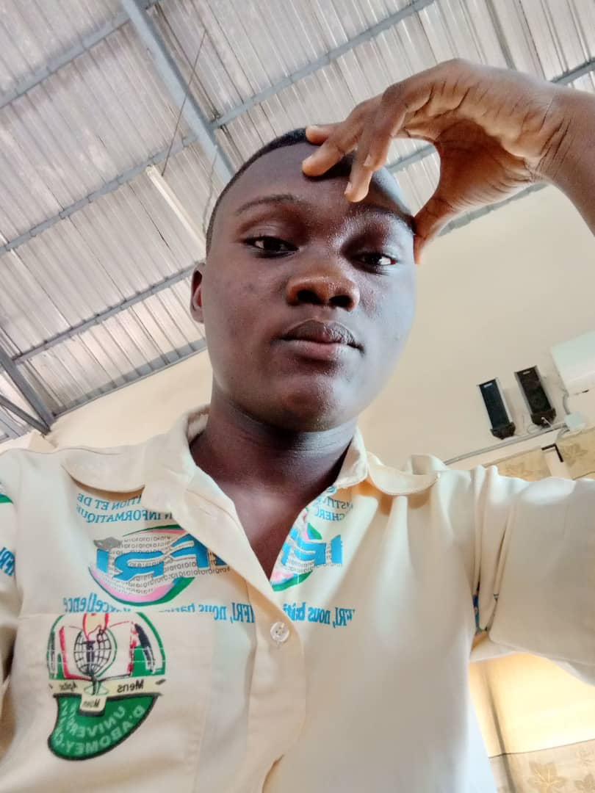

|

PROFIL Ambitieux possédant un esprit de service,aimant le travail en équipe reconnaissant et d'une passion pour l'utilisation de la technologie afin d'aider les gens à s'amliorer. Adresse: Abomey-Calavi/Zogbadjè Téléphone:67887325 Email:dedjinoucharlotjoel@gmail.com VALEURS PERSONNELLES
|
Charlot DEDJINOUEDUCATION Formations académiques: 2021-2024:Université d'Abomey-Calavi -Abomey-Calavi,Bénin
2014-2021:Collège d'enseignement générale L'entente-Cotonou-Benin
Formations certifiantes:
Compétences techniques:
EXPERIENCE PROFESSIONNELLE ACTIVITE DE VOLONTARIAT Décembre 2021: Nom de l'association Giving back - Position occupée:Membre
|
|
Langues:
|
AUTRES INFORMATIONS
Compétences personnelles:
|